安装之前请先检查有没有安装 VS 2008 SP1，安装环境是否为 Windows 7，若没有，请参照VS2008安装教程来安装，注意版本 VS 必须是 SP1，否则将不能安装
这是您从网盘下载的文件：
下面的教程是详细的安装的步骤：
1. 解压当前文件，进入目录
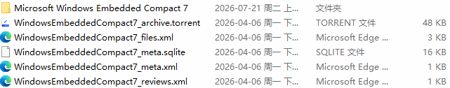
2. 进入文件夹“Microsoft Windows Embedded Compact 7”
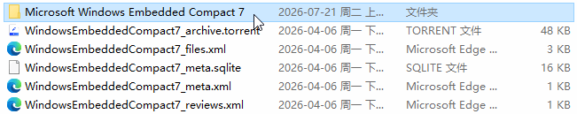
就可以看到以下文件，这就是完整的 Windows Embedded Compact 7 开发环境安装包，这3个文件缺一不可：
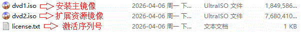
将“dvd1.iso”“dvd2.iso”，分别解压或挂载镜像，放在旁边备用
1. 进入“dvd1.iso”或解压的目录，得到以下文件
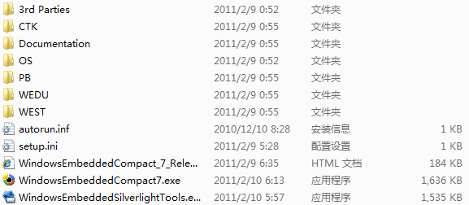
2. 找到“WindowsEmbeddedCompact7.exe”，然后以管理员身份运行
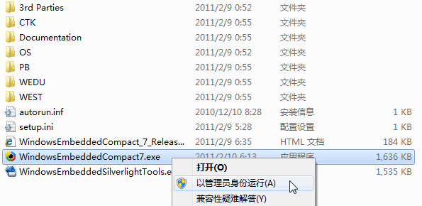
就会出现以下界面
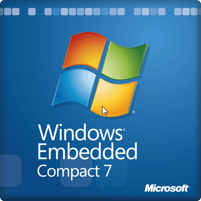
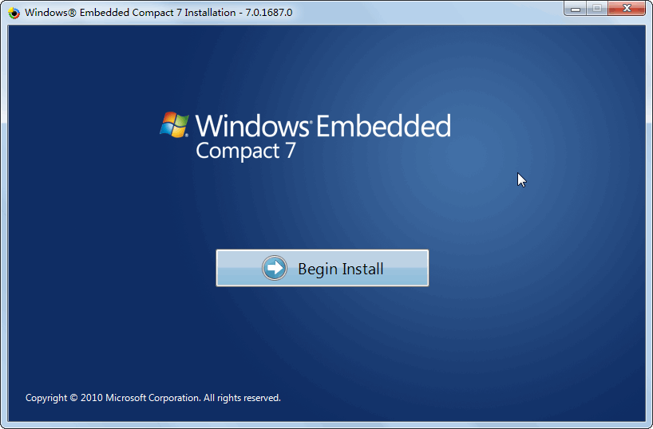
3. 点击开始安装
4. 勾选协议后继续
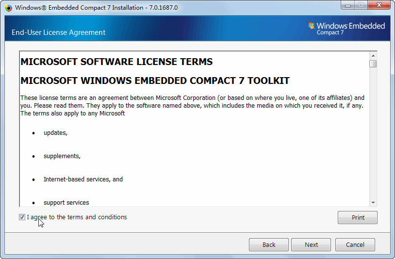
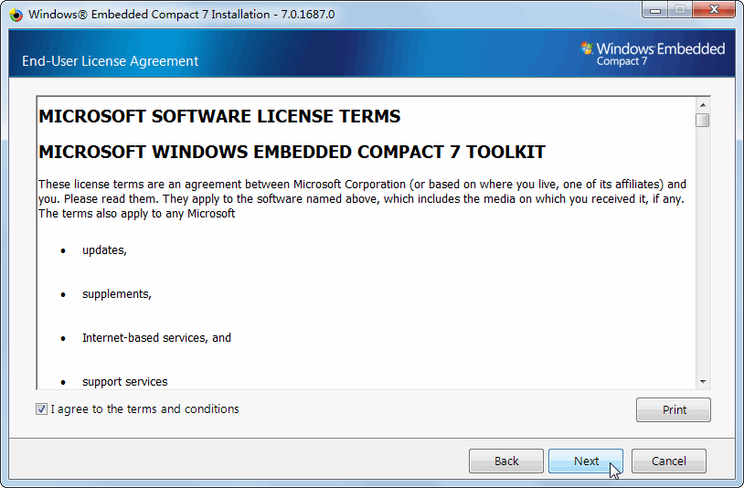

5. 此时要求输入产品序列号，将刚才解压的目录中的“license.txt”打开，里面就是序列号，直接输入或粘贴即可(PW28V-TRKP8-RW8JQ-QG8MF-23C7F），然后点击下一步
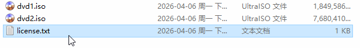
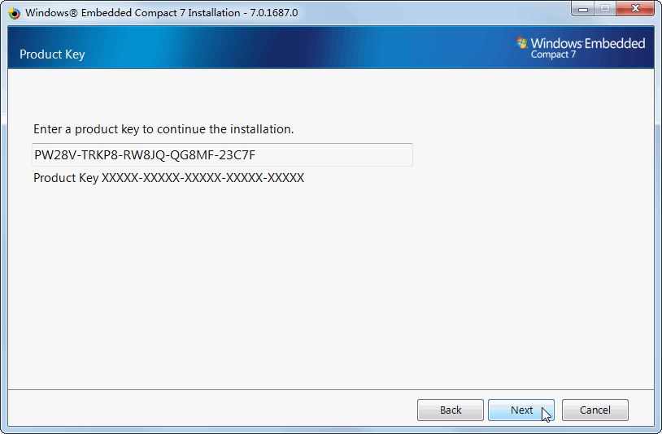
6. 然后就会出现这个界面，因为有一些功能我们是用不到的，因为我们只要在虚拟机中运行，为了节省磁盘空间，我们选择自定义安装，然后点击下一步
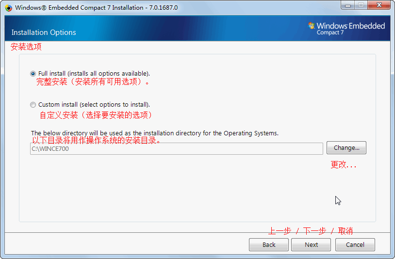

7. 由于我们的主要目的是要在虚拟机中体验，所以只要核心部分 + x86 架构，选择前面4个选项+最后一个选项，然后点击下一步


8. 现在到了准备就绪的界面了，检查无误后，点击“Install”开始安装

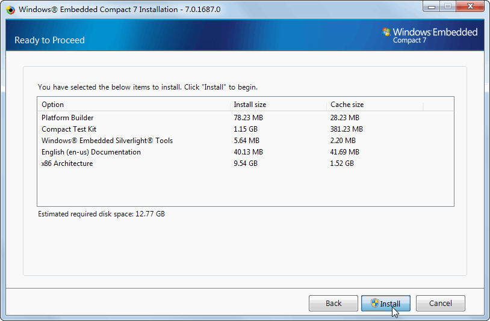
若您提示：
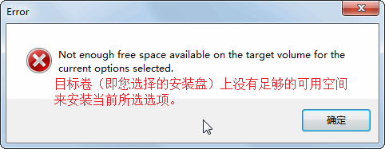
请检查您的目标磁盘的剩余空间，腾出足够的空间再重新操作
9. 现在，安装正式开始，不出意料的话肯定会弹出下面的弹窗
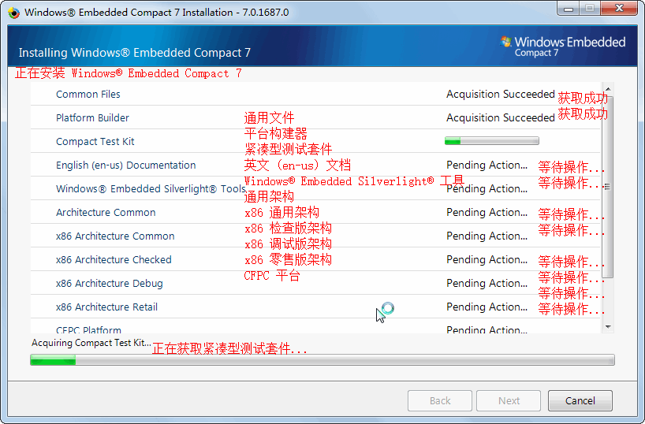
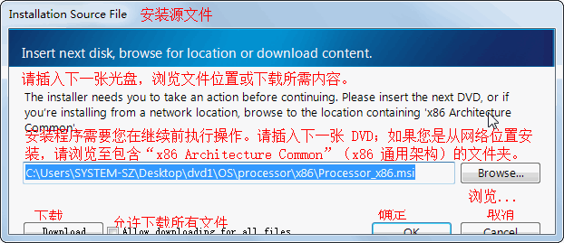
10. 这个窗口是在提示我们需要插入 扩展资源镜像 也就是一开始解压目录的“dvd2.iso”，现在就排上用场了
请先确保您已经插入“dvd2.iso”或已经解压到目录，然后点击“Browse...”浏览的按钮
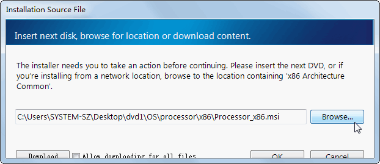
在“浏览文件夹”窗口中进入“dvd2.iso”或者解压的目录，然后逐步展开“OS\processor\x86\”文件夹，然后点击“确定”

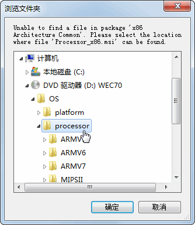

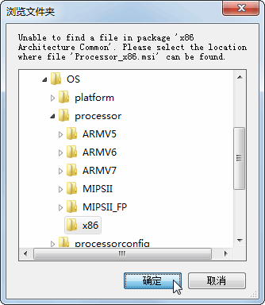
回到了这个界面，现在点击“OK”
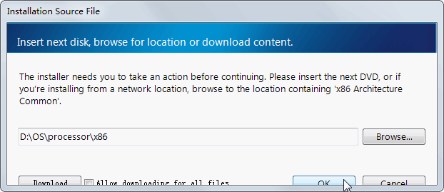
就会发现正常继续安装了，此过程可能会花费十几分钟，希望您耐心等待！
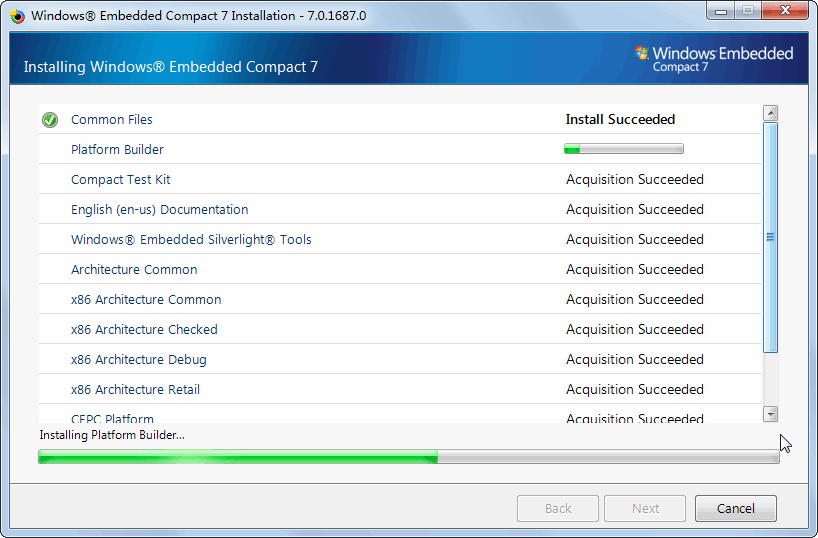
11. 当您看到这个界面时，就说明 Windows Embedded Compact 7 的开发环境已经成功地安装了，直接点击“Finish”完成按钮完成安装

至此，Windows Embedded Compact 7 安装已经完成！
感谢观看！